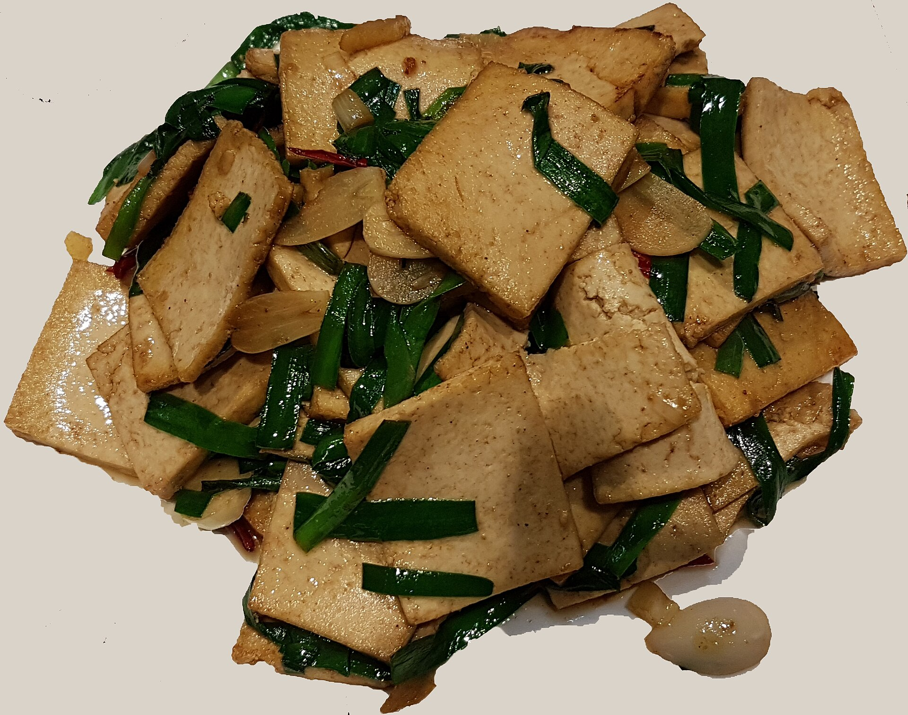

Draft only · noindex,nofollow · PL/EN · P1/P2 remediated
Kolacja białkowa bez mięsa
Lead PL: Kolacja białkowa bez mięsa: kolacja z sensowną porcją białka bez mięsa, odżywek i monotonnego twarogu jedzonego z obowiązku. Ten szkic ma pomóc czytelnikowi podjąć kilka małych decyzji w zwykłym tygodniu, bez obietnic leczenia, bez straszenia i bez planu, którego nie da się utrzymać przy pracy, rodzinie albo podróży.

Najważniejsze wnioski
- Najpierw nazwij sytuację: proste kolacje z białkiem bez codziennego kurczaka i bez odżywek.
- Pierwszy krok to: wybierz jedno źródło białka i dopiero do niego dobierz pieczywo, kaszę, warzywa oraz tłuszcz.
- W praktyce oprzyj posiłki o: jaja, tofu, tempeh, twaróg, skyr, jogurt grecki, soczewica, fasola, hummus i ryba, jeśli nie chodzi o wersję roślinną.
- Nie idź w skrót: sama sałatka bez białka wygląda lekko, ale często kończy się głodem po godzinie.
Najważniejsza zasada
Kolacja białkowa bez mięsa dotyczy przede wszystkim sytuacji: proste kolacje z białkiem bez codziennego kurczaka i bez odżywek. Najlepszy punkt wyjścia to zwykły tydzień, w którym da się powtórzyć podobne posiłki i zauważyć, co naprawdę pomaga. Artykuł nie ustawia jednej idealnej diety; porządkuje decyzje, które mają największą szansę być wykonane.
Mały eksperyment
Pierwszy krok: wybierz jedno źródło białka i dopiero do niego dobierz pieczywo, kaszę, warzywa oraz tłuszcz. Dzięki temu zmiana jest mierzalna i nie zamienia się w chaotyczne usuwanie produktów. Jeśli po kilku dniach nie da się jej utrzymać, warto uprościć warunki, a nie dokładać kolejne zakazy.
Baza posiłku
W praktyce przydadzą się: jaja, tofu, tempeh, twaróg, skyr, jogurt grecki, soczewica, fasola, hummus i ryba, jeśli nie chodzi o wersję roślinną. Taki zestaw daje punkt zaczepienia w sklepie i w kuchni. Nie każdy element musi pojawić się codziennie; ważniejsze jest, żeby posiłek miał funkcję: sycić, ułatwiać regularność albo zmniejszać liczbę przypadkowych decyzji.
Polski sklep i kuchnia
Przy zakupach warto wybrać dwie wersje: domową i awaryjną. Domowa może być tańsza i bardziej powtarzalna, awaryjna ma ratować dzień, kiedy plan się rozsypuje. Wtedy czytelnik nie musi wybierać między perfekcją a całkowitym porzuceniem nawyku.
Czego nie obiecywać
Najważniejsza pułapka: sama sałatka bez białka wygląda lekko, ale często kończy się głodem po godzinie. To szczególnie istotne w treściach zdrowotnych, bo radykalna rada często brzmi atrakcyjnie, ale nie daje lepszego monitorowania objawów ani jakości diety. Lepiej zmienić jeden element i wiedzieć, co się sprawdza.
Jak ocenić efekt
przygotuj dwie bazy: pastę z twarogu lub tofu i porcję strączków; dzięki temu kolacje składasz w kilka minut. Do obserwacji wystarczą trzy sygnały: głód lub sytość, komfort trawienia oraz łatwość powtórzenia planu. Wyniki badań, masa ciała czy objawy przewlekłe wymagają dłuższego horyzontu niż jeden weekend.
Bezpieczeństwo
przy chorobie nerek, zaburzeniach odżywiania lub bardzo niskiej podaży energii ilość białka wymaga indywidualnej oceny. Ten tekst jest edukacyjny i nie zastępuje diagnozy, leczenia ani indywidualnej konsultacji z lekarzem lub dietetykiem.
FAQ
Od czego zacząć przy temacie: kolacja białkowa bez mięsa?
Zacznij od najprostszej obserwacji: wybierz jedno źródło białka i dopiero do niego dobierz pieczywo, kaszę, warzywa oraz tłuszcz. Jedna zmiana daje lepszą informację niż pięć działań wprowadzonych jednocześnie.
Czy potrzebuję specjalnych produktów?
Zwykle nie. Najpierw wykorzystaj proste opcje: jaja, tofu, tempeh, twaróg, skyr, jogurt grecki, soczewica, fasola, hummus i ryba, jeśli nie chodzi o wersję roślinną. Produkty specjalistyczne mają sens dopiero wtedy, gdy rozwiązują konkretny problem, a nie tylko wyglądają zdrowiej.
Kiedy dieta nie wystarczy?
przy chorobie nerek, zaburzeniach odżywiania lub bardzo niskiej podaży energii ilość białka wymaga indywidualnej oceny. W takich sytuacjach dieta może być wsparciem, ale nie powinna opóźniać diagnostyki ani leczenia.
Nota bezpieczeństwa
Artykuł ma charakter edukacyjny i nie zastępuje diagnozy, leczenia ani indywidualnej konsultacji medycznej lub dietetycznej. przy chorobie nerek, zaburzeniach odżywiania lub bardzo niskiej podaży energii ilość białka wymaga indywidualnej oceny
High-protein dinner without meat
Lead EN: High-protein dinner without meat: a dinner with a useful protein portion without meat, powders or obligatory cottage cheese every night. This draft helps the reader make a few small decisions in an ordinary week, without treatment promises, scare tactics or a plan that collapses around work, family or travel.
Key takeaways
- Start by naming the situation: proste kolacje z białkiem bez codziennego kurczaka i bez odżywek.
- The first step is to choose one protein food first, then add bread, groats, vegetables and fat around it.
- In practice, build around: eggs, tofu, tempeh, cottage cheese, skyr, Greek yoghurt, lentils, beans, hummus and fish if the meal is not fully plant-based.
- Avoid the shortcut that a salad without protein may look light but often leads to hunger an hour later.
The key principle
High-protein dinner without meat is mainly about this situation: proste kolacje z białkiem bez codziennego kurczaka i bez odżywek. The best starting point is an ordinary week in which similar meals can be repeated and patterns can be noticed. The article does not prescribe one perfect diet; it organises the decisions most likely to be carried out.
A small experiment
The first step is to choose one protein food first, then add bread, groats, vegetables and fat around it. This makes the change measurable and prevents chaotic food removal. If it cannot be maintained after a few days, simplify the conditions rather than adding more rules.
Meal base
Practical options include: eggs, tofu, tempeh, cottage cheese, skyr, Greek yoghurt, lentils, beans, hummus and fish if the meal is not fully plant-based. This gives the reader a shopping and cooking anchor. Not every element must appear daily; what matters is the job of the meal: fullness, rhythm or fewer random decisions.
Polish shop and kitchen
For shopping, it helps to choose two versions: a home version and a backup version. The home version can be cheaper and more repeatable; the backup version saves the day when the plan falls apart. This avoids an all-or-nothing choice between perfection and abandoning the habit.
What not to promise
The key trap is that a salad without protein may look light but often leads to hunger an hour later. This matters in health content because radical advice often sounds attractive but does not improve symptom tracking or diet quality. Changing one element gives clearer feedback.
How to judge the effect
prepare two bases: a cottage-cheese or tofu spread and a portion of pulses, then assemble dinners in minutes. Three signals are enough to monitor: hunger or fullness, digestive comfort and whether the plan can be repeated. Lab results, body weight and chronic symptoms need a longer horizon than one weekend.
Safety
with kidney disease, eating disorders or very low energy intake, protein targets need individual assessment. This article is educational and does not replace diagnosis, treatment or an individual consultation with a doctor or dietitian.
FAQ
Where should I start with kolacja białkowa bez mięsa?
Start with the simplest observation: choose one protein food first, then add bread, groats, vegetables and fat around it. One change gives clearer feedback than five actions introduced at the same time.
Do I need special products?
Usually not. Start with simple options: eggs, tofu, tempeh, cottage cheese, skyr, Greek yoghurt, lentils, beans, hummus and fish if the meal is not fully plant-based. Specialist products make sense only when they solve a specific problem, not just because they look healthier.
When is diet not enough?
with kidney disease, eating disorders or very low energy intake, protein targets need individual assessment. In such situations, diet can support care but should not delay diagnosis or treatment.
Safety note
This article is educational and does not replace diagnosis, treatment or individual medical or nutrition advice. with kidney disease, eating disorders or very low energy intake, protein targets need individual assessment